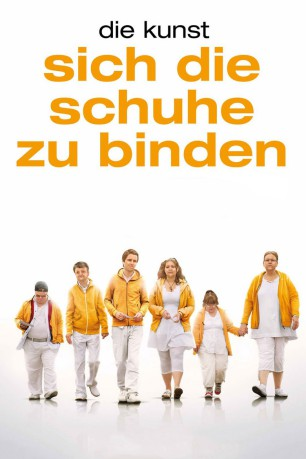

#7312 Die Kunst sich die Schuhe zu binden
 
 IMDB-Wertung: 6.1 / 10
IMDB-Wertung: 6.1 / 10  Metascore: 0
Metascore: 0 
Alex hat zwar eine hohe Meinung von sich selbst, doch die Realität sieht leider anders aus: Er ist arbeitslos und seine Beziehung zu Lisa steht kurz vor dem Ende. Der einzige Job, den ihm das Arbeitsamt anbietet, ist ein Betreuerposten in einem Heim für geistig behinderte Menschen. Widerwillig nimmt er die Stelle an, lernt jedoch dann durch die gemeinsam Arbeit zu schätzen, dass jeder Mensch Talente hat, die es wert sind, gefördert zu werden. Entschlossen, ihnen ihren Auftritt im Rampenlicht zu bescheren, meldet er eine Gruppe seiner Schützlinge zu einer Casting-Show an.
Jahr: 2011
Dauer: 96 Minuten
FSK: 0
Land: Schweden Studio: MFA+ FilmdistributionTonspuren:
Untertitel:
Auflösung: 1080p (1920x824) Größe: 3256 MB
Genre: Drama, Musik, Komödie
Regisseur: Lena Koppel
Drehbuch: Trine Piil Christensen
Soundtrack:
Darsteller:
- Sverrir Gudnason als Alex
- Cecilia Forss als Lisa
- Tomas Brolin als Jury 1
- Vanna Rosenberg als Hanna
- Mats Melin als Kjell-Åke
- Theresia Widarsson als Filippa
- Bosse Östlin als Ebbe
- Ellinore Holmer als Katarina
- Maja Carlsson als Kristina
- Marie Robertson als Anna-Lena
 Claes Malmberg als Peter
Claes Malmberg als Peter- Eva Funck als Mother of Leif
- Jill Ung als Mother of Katarina
- Tommy Sporrong als Brother of kjell-Åke
- Bill Hugg als Ryttmästaren
- Nadine Kirschon als Laura
- Dag Malmberg als Micke
- Kalle Westerdahl als Anna-Lena's Boyfriend
- Erland Beskow als Troublemaker
- Peter Eriksson als Man in a suit
- Elisabet Höglund als Jury 2
- Kevin Borg als Jury 3
- Sísí Sverrisdóttir Uggla als Josefin
- Douglas Leon als Talent show host
- Tore Berglund als Dansbandet - Keyboard
- Per-Erik Domargård als Dansbandet - Elgitarr
- David Gustafsson als Leif
- Pär Johansson als Regissören
- Erik Jonsson als Policeman
- Niklas Medin als Dansbandet - Dragspel
- Philip Panov als Janne
- Thorleif Robertsson als Dansbandet - Trummor
- Alexander Stocks als P.A.
- Erik Tanzborn als Priest
- Ulf Vestlund als Dansbandet - Bas
- Anton Lavi als Talent in line / Audience Member , uncredited
Datei: X:\2011(G-M)\Kunst sich die Schuhe zu binden, Die (2011, FSK0, 1920x824).mkv seit 16.10.2017
Festplatte: HD 2011(G-Z)
 Es gibt insgesamt 100 Filme in der Gruppe '2011(G-M)'
Es gibt insgesamt 100 Filme in der Gruppe '2011(G-M)'